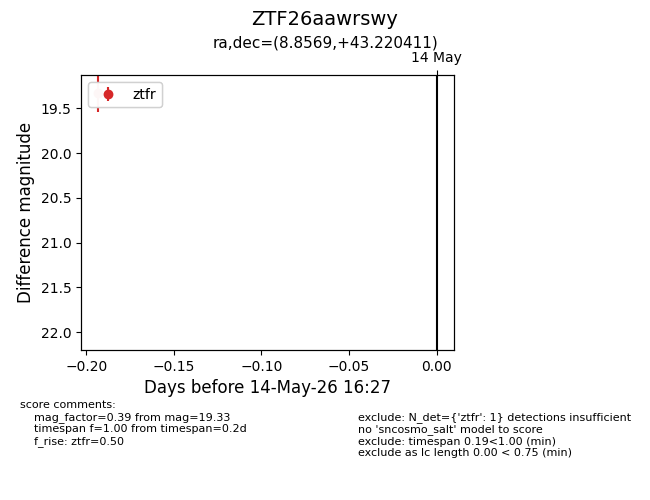
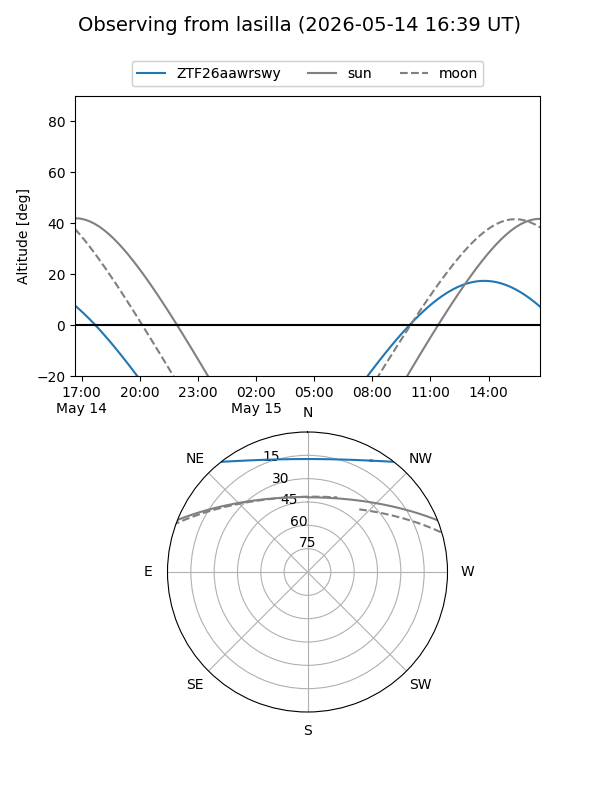
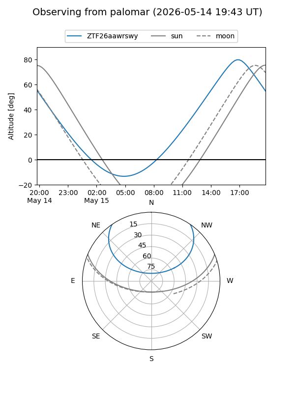

ZTF26aawrswy
Target ZTF26aawrswy at 2026-05-14 16:30
Aliases and brokers:
FINK: link
Lasair: link
ALeRCE: link
alt names
ZTF26aawrswy (ztf,fink_ztf)
Coordinates:
equatorial (ra, dec) = 8.8569,+43.22041
equatorial (HMS+DMS) = 00:35:25.65,+43:13:13.48
galactic (l, b) = (119.8376,-19.55512)
Flags:
Photometry:
last ztfr=19.33
1 ztfr detections
Lightcurve

Visibility


Additional plots